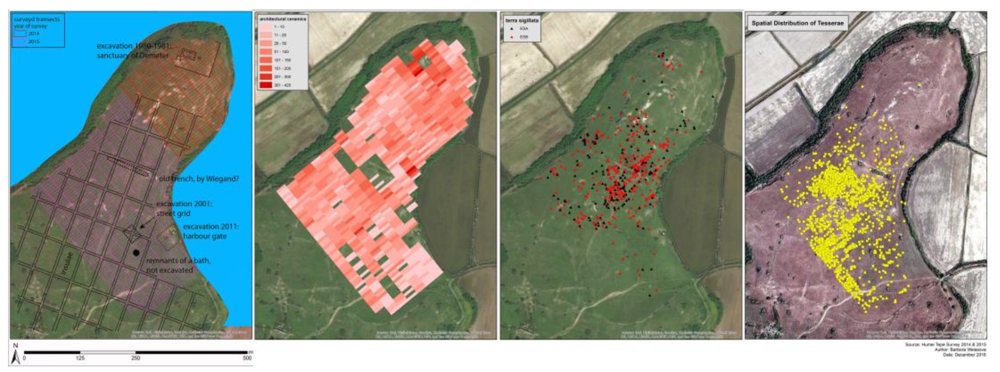
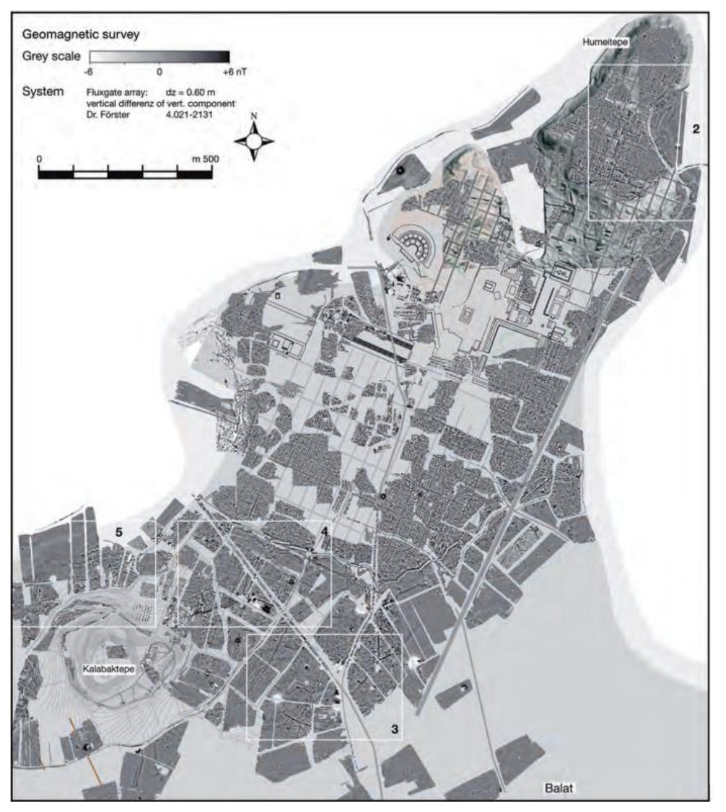
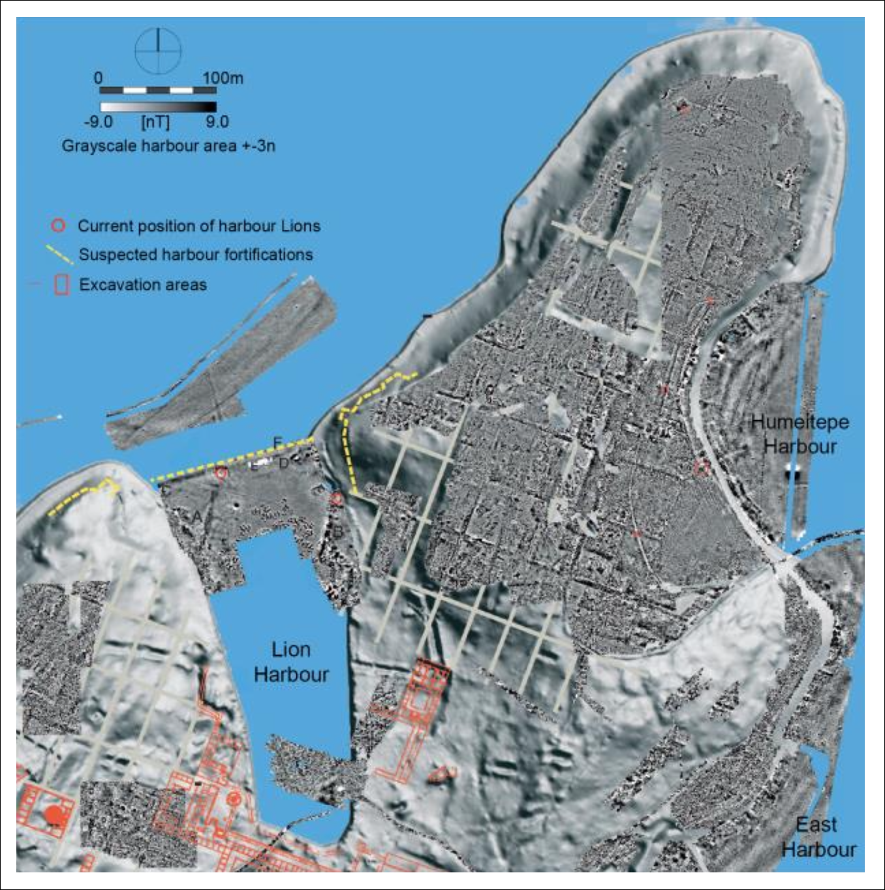
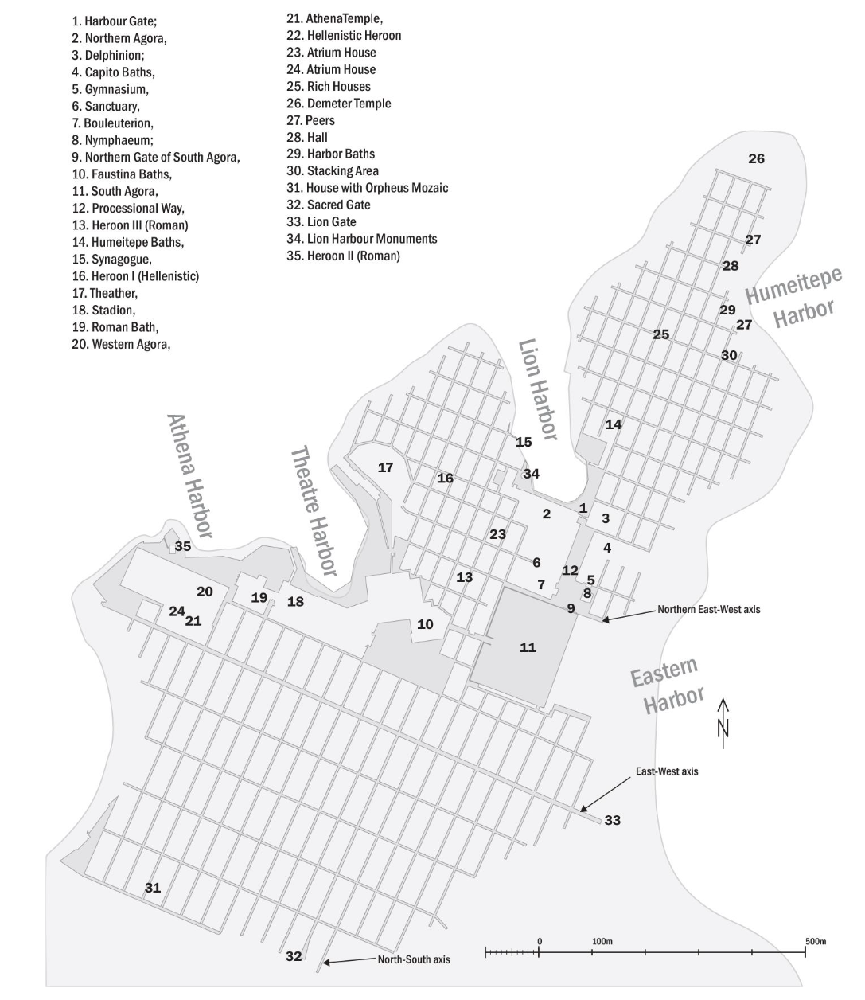
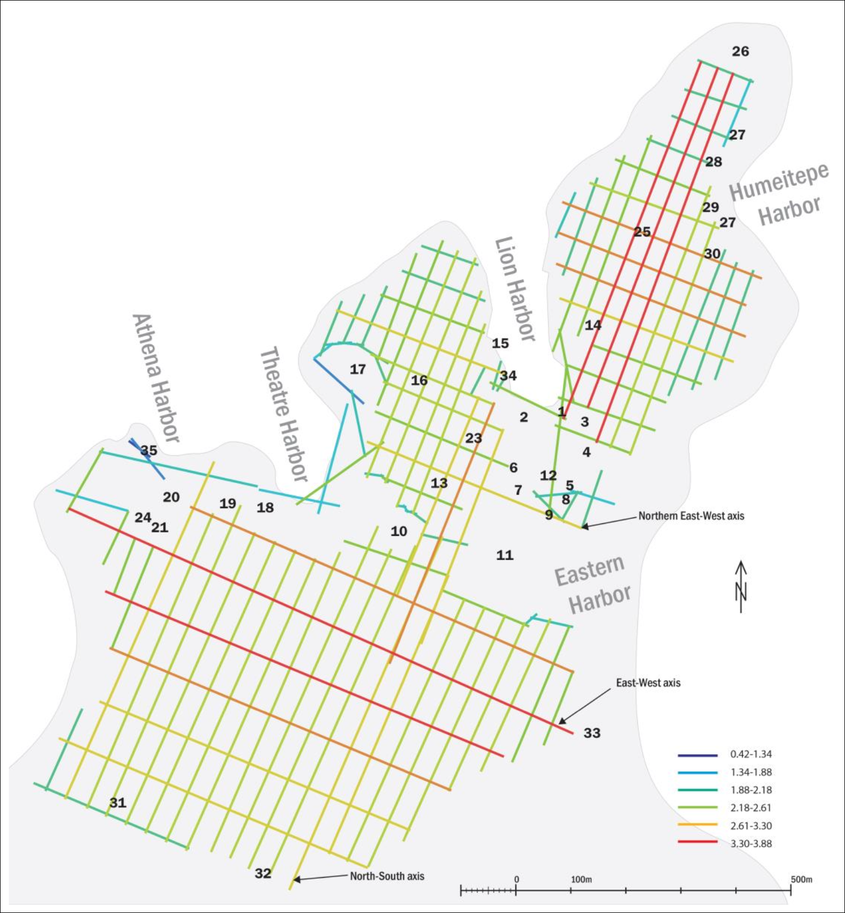
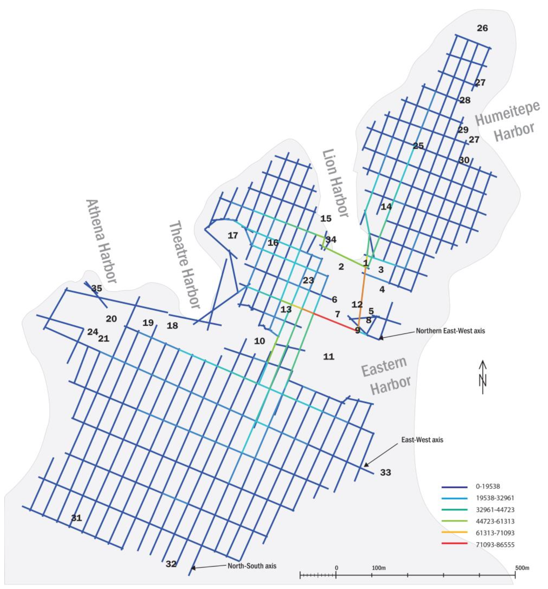

Spatial research / Archaeological interpretation
01 — Miletus / 2023
Reconstructing
Roman Miletus
From archaeological evidence to the spatial logic of an ancient city.
How can the spatial organisation of a city be investigated when much of its urban fabric is no longer visible? This project explores the Roman-period urban network of Miletus through the synthesis of archaeological material, geophysical research, historical plans and spatial analysis.
Reading what remains
The reconstruction begins with fragmentary traces. Geophysical survey results, topographic information and published archaeological interpretations provide different layers of evidence for understanding the buried and surviving urban landscape.



Making the city legible
The available evidence is brought together in a proposed spatial arrangement of Roman Miletus. Historical background research examined the city's changing urban plan, drawing particularly on the detailed account by Weber, alongside earlier plans and other archaeological publications. This work informed the interpretation and redrawing of the Roman-period layout. The resulting reconstruction is an evidence-based working model for spatial analysis, rather than a definitive record of the ancient city.

Figure 34. Working reconstruction developed for this study, informed principally by Weber's account of Miletus's urban development (as cited in the thesis) and supplemented by other published archaeological research. The reconstructed network provided the basis for the subsequent Space Syntax analyses.
Testing spatial relationships
Space Syntax methods are applied to the reconstructed network to investigate how different streets relate to the wider urban system and to their local surroundings. Axial and segment analyses offer complementary ways of examining spatial integration and potential movement patterns.




From sources to spatial model
A layered process
Background research into the historical development of Miletus informed the reconstruction. The detailed account by Weber was translated and examined alongside earlier plans and other published sources; this preparatory work helped establish how the urban layout had changed over time.
The evidence was then synthesised and redrawn as a working representation of Roman Miletus. The analytical stage examined this reconstructed network at global and local scales, allowing patterns of spatial configuration to be compared.
Methods & questions
- Archaeological evidence synthesis
- Geophysical and topographic interpretation
- Urban network reconstruction
- Axial integration analysis
- Segment analysis
Understanding
the city through
its structure.
The project demonstrates how a carefully qualified reconstruction can become a basis for investigating the spatial relationships of an ancient urban environment. The analytical results indicate potential patterns of accessibility and movement; they should be interpreted as properties of the reconstructed model, not as direct proof of historical routes or behaviour.
This project draws on archaeological, geophysical and published research material. Individual source credits and reproduction permissions should be retained alongside the relevant figures in the final portfolio presentation.